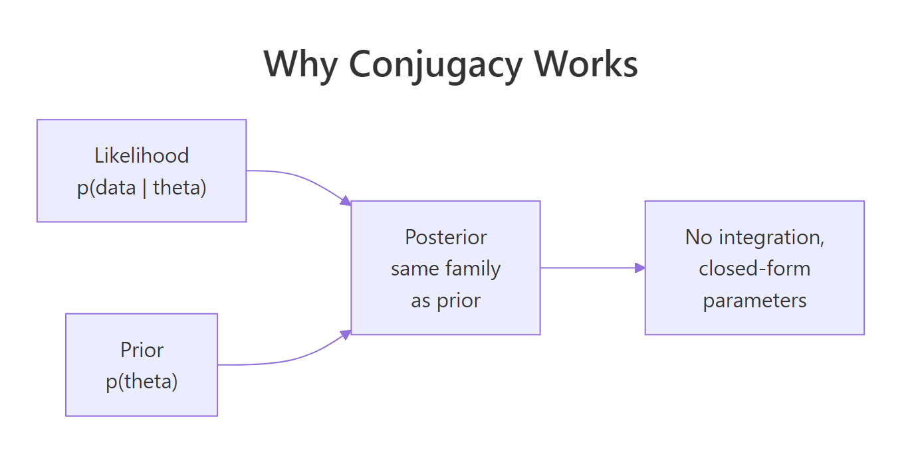
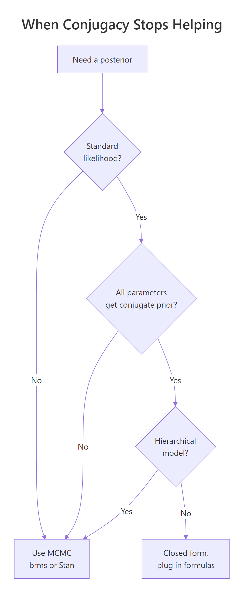
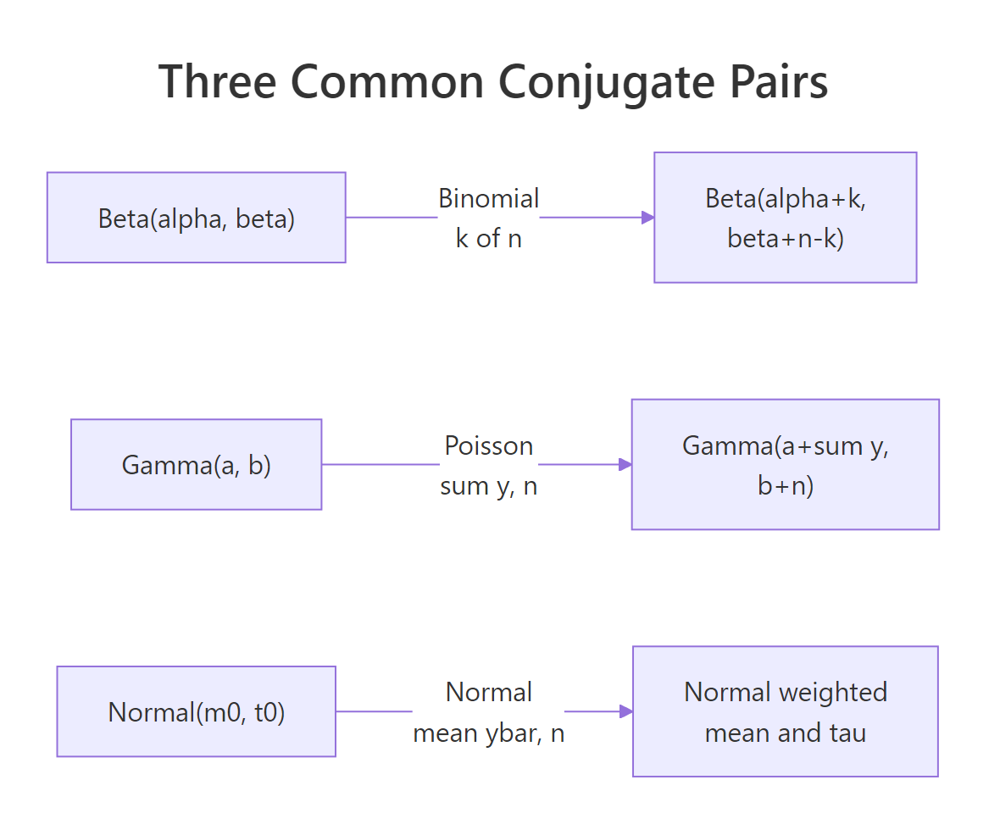

Conjugate Priors in R: The Shortcut That Gives Exact Posteriors Without MCMC
A conjugate prior is one where the posterior, after observing data, stays in the same distribution family as the prior. That property turns Bayesian updating into pure arithmetic on shape parameters, no MCMC required, no integration to do by hand. R has every helper you need (dbeta, dgamma, dnorm, qbeta, qgamma, qnorm) so a working analyst can compute exact posteriors in three lines.
What does it mean for a prior to be conjugate?
You probably came here because someone told you "just use a conjugate prior and you skip MCMC." That is true, and the reason it works is small enough to fit in a paragraph. The likelihood and the prior, viewed as functions of the parameter, share the same algebraic shape. Multiply them and the shape is preserved, so the posterior lives in the same family with parameters you can write down by hand.
The whole trick is one identity. Posterior is proportional to prior times likelihood:
$$ p(\theta \mid y) \;\propto\; p(y \mid \theta) \cdot p(\theta) $$
Where $p(\theta)$ is the prior, $p(y \mid \theta)$ is the likelihood, and $p(\theta \mid y)$ is the posterior. The constant of proportionality is whatever makes the posterior integrate to 1. When prior and likelihood are conjugate, that constant pops out for free because the posterior is a known distribution.
Suppose you flip a possibly-biased coin 100 times and see 65 heads. With a Beta(2, 2) prior, the posterior is exactly Beta(67, 37). One line of arithmetic gives you the full posterior plus its 95% credible interval.
The Beta(2, 2) prior gives a Beta(67, 37) posterior. Mean 0.644 sits between the prior mean 0.5 and the data proportion 0.65, gently pulled toward 0.5 by the prior's weight. The 95% credible interval is the range that contains 95% of the posterior probability mass. None of this required integrate(), optim(), or any sampler.

Figure 1: Why conjugacy works. Prior and likelihood share the same algebraic shape, so the posterior stays in the family.
Try it: Repeat the calculation with a tighter Beta(20, 20) prior. What does the posterior mean become and why?
Click to reveal solution
A Beta(20, 20) prior is equivalent to having seen 38 prior flips with 19 heads. Adding the new 100 flips gives a posterior pulled noticeably back toward 0.5. A stronger prior carries more weight against the same data.
How does the Beta-Binomial pair work?
The Beta-Binomial pair is the workhorse for proportions. Any time you have successes out of trials, that is Binomial data, and a Beta prior gives you a Beta posterior. The shape parameters alpha and beta act as pseudo-counts of prior successes and failures, so the update rule is just addition: add observed successes to alpha, add observed failures to beta.
A practical scenario. You ship 200 builds and 42 of them contain a bug. You believe most builds are clean, encoded as a Beta(2, 8) prior (mean 0.2). Compute the posterior bug rate.
The posterior is Beta(44, 166). The mean of 0.214 is just above the data proportion of 0.21, slightly pulled toward the prior mean 0.2. The 95% credible interval [0.16, 0.27] gives a reportable range. The whole computation took four arithmetic operations and one quantile call.
Try it: Recompute with a Beta(1, 1) uniform prior on the same data. How does the posterior mean change?
Click to reveal solution
With a uniform prior, the posterior mean is essentially the data proportion. The prior carries weight 2 against the data's weight of 200, so the data dominates.
How does the Gamma-Poisson pair work?
When you have count data with a constant rate, like support tickets per day or accidents per month, the natural likelihood is Poisson. The conjugate prior is Gamma, and the posterior is Gamma with arithmetic-update parameters: add the sum of observations to alpha, add the number of observations to beta.
The math in one line. If $y_1, \ldots, y_n$ are Poisson($\lambda$) observations and the prior is Gamma($\alpha, \beta$), then:
$$ \lambda \mid y \;\sim\; \text{Gamma}\!\left(\alpha + \sum y_i,\; \beta + n\right) $$
Where: $\alpha$ and $\beta$ are the prior shape and rate, $n$ is the sample size, and $\sum y_i$ is the total of the observed counts.
Imagine you run a SaaS support team. You observe ticket counts for five days: 8, 12, 7, 15, 9. Your prior belief is "around 8 tickets per day, but I am not very sure," encoded as Gamma(2, 0.25). Compute the posterior over the daily rate.
The posterior is Gamma(53, 5.25), with mean 10.1 tickets per day and 95% credible interval [7.6, 12.9]. The data mean was 51/5 = 10.2, so the prior pulled the answer down by about 0.1, confirming the prior was barely informative against five real observations.
Try it: Suppose you collect another five days with sum 60 instead of 51. Recompute the posterior parameters and mean.
Click to reveal solution
A larger observed sum shifts the posterior mean up to about 11.8. The Gamma family responds linearly to the observed total, which is why it stays interpretable across batch sizes.
How does the Normal-Normal pair work (with known sigma)?
For data that is approximately Normal with a known measurement standard deviation, the conjugate prior on the unknown mean is itself Normal. The posterior is Normal with two intuitive parameters: a weighted average of the prior mean and the data mean, and a precision (inverse variance) that adds prior precision and data precision.
The posterior mean formula is a precision-weighted blend.
$$ \mu \mid y \;\sim\; \text{Normal}\!\left(\frac{\frac{\mu_0}{\tau_0^2} + \frac{n \bar{y}}{\sigma^2}}{\frac{1}{\tau_0^2} + \frac{n}{\sigma^2}},\;\; \left(\frac{1}{\tau_0^2} + \frac{n}{\sigma^2}\right)^{-1}\right) $$
Where: $\mu_0$ is the prior mean, $\tau_0$ is the prior standard deviation, $\sigma$ is the known data standard deviation, $n$ is the sample size, and $\bar{y}$ is the sample mean. The first term in the parentheses is the precision-weighted blend, the second is the posterior variance.
A blood-pressure example. A clinic measures systolic BP for 15 patients (sample mean 128 mmHg, known measurement σ = 10 mmHg). Prior belief about the population mean is Normal(120, 8²). Compute the posterior.
The posterior is Normal(127.1, 2.18²) with 95% credible interval [122.8, 131.4]. The data mean was 128.7 and the prior mean was 120, so the posterior sits at 127.1, much closer to the data because n=15 observations carry more precision than a prior with σ=8.
Try it: Tighten the prior to Normal(120, 2²) (much more confident) and recompute the posterior mean. Does it move closer to 120?
Click to reveal solution
A Normal(120, 2²) prior carries weight 1/4 = 0.25 in precision units, comparable to 25 hypothetical observations at σ=10. Combined with the 15 real observations, the posterior gets pulled close to 120 (122.6) instead of close to the data mean (128.7).
How does sequential updating work for Gamma-Poisson?
A nice property of conjugate updates is that they are order-independent and incremental. Update after batch one, then update again with batch two, and you land on the same posterior as if you had combined both batches and updated once. That makes streaming Bayes natural.
Both paths land on Gamma(53, 5.25). The math is the same because the Gamma update is additive in both alpha (which absorbs sum y) and beta (which absorbs n). Yesterday's posterior literally becomes today's prior.
Try it: Split the same five-day data into batches of 1 and 4. Verify the sequential result still matches the one-shot.
Click to reveal solution
Same Gamma(53, 5.25) regardless of how you slice the data. Order-independence is a hard property to give up once you have it.
When does conjugacy NOT save you?
Conjugacy is a powerful shortcut, but a narrow one. The moment your model leaves the small list of standard pairs, the closed form disappears and you need a sampler. The three big places it breaks: multi-parameter likelihoods without a joint conjugate, hierarchical models, and any custom likelihood that does not match a known family.
A two-parameter Normal model (both mean AND standard deviation unknown) demonstrates the wall. Grid approximation works in two dimensions but blows up fast.
Two parameters at 80 grid points each is 6,400 cells. Three parameters at 80 points is 512,000. Five parameters at 50 points is over 312 million. The combinatorial blow-up is exactly why MCMC was invented: it samples from the posterior without ever computing it on a grid.

Figure 3: When conjugacy stops helping. Most real models fall off this tree quickly.
Try it: Roughly how many cells does grid approximation need for 5 parameters at 50 points each?
Click to reveal solution
Over 312 million cells. Each cell needs a likelihood evaluation. By six or seven parameters even cluster-scale grids are infeasible.
Practice Exercises
Exercise 1: Click-through rate (Beta-Binomial)
A new ad shows 500 impressions and gets 37 clicks. Use a Beta(2, 8) prior. Compute the posterior, the posterior mean, the 95% credible interval, and the posterior probability that the true click-through rate exceeds 5%.
Click to reveal solution
Posterior Beta(39, 471), mean 0.077, 95% CrI [0.055, 0.102]. Posterior probability above 5% is 0.985, strongly suggesting the ad outperforms a 5% threshold.
Exercise 2: Support-ticket rate over two days (Gamma-Poisson)
Two days of data: 12 tickets on Monday, 18 tickets on Tuesday. Use a Gamma(2, 1) prior. Compute the posterior over the daily rate, the posterior mean, and the posterior probability that the true rate exceeds 20 tickets per day.
Click to reveal solution
Posterior Gamma(32, 3), mean 10.7 tickets per day. Posterior probability of exceeding 20 is just 0.08%, so the data essentially rules that out under this prior.
Exercise 3: IQ measurements (Normal-Normal)
Three IQ measurements (118, 122, 124) with known measurement σ = 15. Prior on the underlying IQ is Normal(100, 15²). Compute the posterior mean, posterior standard deviation, and 95% credible interval.
Click to reveal solution
Posterior mean 115.5, posterior SD 7.5. Three measurements with σ=15 carry the same precision as the prior, so the posterior mean is exactly halfway between the prior mean (100) and the data mean (121.3).
Complete Example: Two-Variant AB Test
A typical conversion-rate AB test. Control gets 1,200 visitors and 84 convert; treatment gets 1,180 visitors and 105 convert. Use a Beta(1, 1) uniform prior on each variant. Compute posteriors for both, then estimate the posterior probability that treatment beats control by sampling from each posterior.
Control posterior mean is 7.0%, treatment is 9.0%. Sampling 100,000 draws from each posterior shows the treatment rate exceeds the control rate in 97% of cases, a strong signal that treatment is better. This is the Bayesian counterpart to a frequentist p-value, but the answer is a probability you can quote directly to a stakeholder: "we are 97% sure treatment beats control."
Summary

Figure 2: The three common conjugate pairs and their closed-form posterior parameters.
| Family | Likelihood | Prior | Posterior parameters |
|---|---|---|---|
| Beta-Binomial | Binomial(n, theta) | Beta(alpha, beta) | Beta(alpha + k, beta + n - k) |
| Gamma-Poisson | Poisson(lambda) | Gamma(a, b) | Gamma(a + sum y, b + n) |
| Normal-Normal (known sigma) | Normal(mu, sigma²) | Normal(m0, t0²) | Precision-weighted mean and tau |
| Normal-Inverse-Gamma | Normal(mu, sigma²) for sigma² | Inverse-Gamma(a, b) | Inverse-Gamma(a + n/2, b + SS/2) |
When all four conditions hold, you skip MCMC: standard likelihood, conjugate prior on each parameter, no hierarchy, single dataset.
References
- Johnson, A. A., Ott, M. Q., Dogucu, M. Bayes Rules! An Introduction to Applied Bayesian Modeling, Chapman & Hall, 2022. Chapter 5 covers conjugate families. bayesrulesbook.com/chapter-5.
- Gelman, A., Carlin, J. B., Stern, H. S., et al. Bayesian Data Analysis, 3rd ed. Chapman & Hall, 2013. Chapters 2-3 derive the standard conjugate families.
- Cook, J. D. "Diagram of Bayesian conjugate priors." johndcook.com/blog/conjugate_prior_diagram. Interactive cross-family reference.
- Fink, D. "A Compendium of Conjugate Priors." 1997. johndcook.com/CompendiumOfConjugatePriors.pdf. Comprehensive table.
- Gelman, A. and the Stan team. "Prior choice recommendations." github.com/stan-dev/stan/wiki/Prior-Choice-Recommendations.
- CRAN Task View: Bayesian Inference. cran.r-project.org/web/views/Bayesian.html.
- Wikipedia. "Conjugate prior." en.wikipedia.org/wiki/Conjugate_prior. Comprehensive cross-family table including hyperparameter interpretation.
Continue Learning
- Bayesian Statistics in R, the section opener with deeper Beta-Binomial intuition and the prior-likelihood-posterior simulation.
- Bayes' Theorem in R, the discrete-case foundation that motivates everything here.
- Gamma & Beta Distributions in R, full mechanics of the two distribution families used as priors throughout this post.